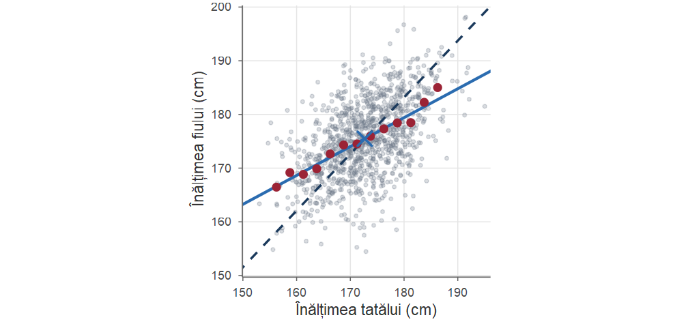
Probabilități și Statistică · Cursul 14
Universitatea din București · Facultatea de Matematică și Informatică · 2026–2027
| Partea | Conținut |
|---|---|
| I | Galton și regresia spre medie; corelația de selecție; modelul de regresie liniară simplă |
| II | Metoda celor mai mici pătrate; proprietățile estimatorilor; Gauss–Markov; estimarea lui \(\sigma^2\) |
| III | Descompunerea variabilității, \(R^2\); inferență în modelul normal; predicție; analiza reziduurilor |
| IV | Capcane; forma matriceală; regresia polinomială, supraajustarea și regresia ridge; regresia multiplă; exerciții rezolvate |
La sfârșitul cursului, studenții ar trebui să poată:
lm, summary, confint, predict în R.Cum depinde distanța de frânare de viteză? greutatea de înălțime? nota de orele de studiu? Unealta cea mai simplă și cea mai folosită: regresia liniară.
Francis Galton (1822–1911), văr al lui Charles Darwin, a studiat transmiterea ereditară a unor caracteristici, printre care înălțimea. În Regression towards mediocrity in hereditary stature (1886) a observat că părinții foarte înalți au, în medie, copii înalți, dar mai puțin înalți decât ei, iar părinții foarte scunzi au copii scunzi, dar mai puțin scunzi decât ei. Galton a numit efectul „regresie spre mediocritate” (azi: regresie spre medie). Discipolul său Karl Pearson a formalizat coeficientul de corelație și, împreună cu Alice Lee, a măsurat în 1903 înălțimile a 1078 de perechi tată–fiu.

Avem nevoie de: (i) o măsură a intensității asocierii liniare — coeficientul de corelație; (ii) o metodă de a alege „cea mai bună” dreaptă — metoda celor mai mici pătrate.
Eșantion bivariat \((x_1,y_1),\dots,(x_n,y_n)\), \(n\ge2\); mediile de selecție \(\xbar\), \(\bar y_n\). \[ S_{xx}=\sum_{i=1}^n(x_i-\xbar)^2,\qquad S_{yy}=\sum_{i=1}^n(y_i-\bar y_n)^2,\qquad S_{xy}=\sum_{i=1}^n(x_i-\xbar)(y_i-\bar y_n). \] Formule utile pentru calcule manuale: \[ S_{xx}=\sum_{i=1}^n x_i^2-n\xbar^2,\qquad S_{yy}=\sum_{i=1}^n y_i^2-n\bar y_n^2,\qquad S_{xy}=\sum_{i=1}^n x_iy_i-n\xbar\,\bar y_n . \] Varianțele de selecție corectate: \(s_x^2=S_{xx}/(n-1)\), \(s_y^2=S_{yy}/(n-1)\).
Covarianța de selecție a eșantionului \((x_i,y_i)_{1\le i\le n}\) este \[ s_{xy}=\frac{1}{n-1}\sum_{i=1}^n(x_i-\xbar)(y_i-\bar y_n)=\frac{S_{xy}}{n-1}. \] Dacă \(S_{xx}>0\) și \(S_{yy}>0\), coeficientul de corelație de selecție (coeficientul lui Pearson) este \[ r=r_{xy}=\frac{s_{xy}}{s_x\,s_y}=\frac{S_{xy}}{\sqrt{S_{xx}\,S_{yy}}}. \]
Fie \(r\) coeficientul de corelație al eșantionului \((x_i,y_i)_{1\le i\le n}\), cu \(S_{xx},S_{yy}>0\). Atunci:
Demonstrație. Punctele (1)–(2): aplicăm inegalitatea Cauchy–Buniakovski–Schwarz vectorilor \(\mathbf a=(x_i-\xbar)_i\) și \(\mathbf b=(y_i-\bar y_n)_i\) din \(\R^n\): \[ S_{xy}^2=\langle \mathbf a,\mathbf b\rangle^2\le \|\mathbf a\|^2\|\mathbf b\|^2=S_{xx}S_{yy}, \] deci \(r^2\le1\), cu egalitate dacă și numai dacă \(\mathbf b=\lambda\mathbf a\) pentru un \(\lambda\ne 0\), adică \(y_i-\bar y_n=\lambda(x_i-\xbar)\) pentru orice \(i\): punctele se află pe dreapta de pantă \(\lambda\) prin \((\xbar,\bar y_n)\), iar \[ r=\frac{\lambda\|\mathbf a\|^2}{\|\mathbf a\|\cdot|\lambda|\,\|\mathbf a\|}=\sgn(\lambda). \] Argument alternativ pentru (1): \(0\le\frac{1}{n-1}\sum_i(z_i\pm w_i)^2=2(1\pm r)\).■
Demonstrație. Punctul (3) este evident din definiție (\(S_{xy}=S_{yx}\)).
Punctul (4): \(\bar u_n=a+b\xbar\), deci \(u_i-\bar u_n=b(x_i-\xbar)\) și analog \(v_i-\bar v_n=d(y_i-\bar y_n)\). Rezultă \[ S_{uv}=bd\,S_{xy},\qquad S_{uu}=b^2S_{xx},\qquad S_{vv}=d^2S_{yy}, \] de unde \[ r_{uv}=\frac{bd\,S_{xy}}{|b|\,|d|\sqrt{S_{xx}S_{yy}}}=\sgn(bd)\,r_{xy}. \]■
Pentru opt studenți s-au înregistrat numărul de ore de studiu săptămânal \(x\) și nota obținută la examen \(y\):
| \(x_i\) | 1 | 2 | 3 | 4 | 5 | 6 | 7 | 8 |
|---|---|---|---|---|---|---|---|---|
| \(y_i\) | 3 | 5 | 4 | 6 | 7 | 6 | 8 | 9 |
Avem \(\sum x_i=36\), \(\sum y_i=48\), \(\sum x_i^2=204\), \(\sum y_i^2=316\), \(\sum x_iy_i=248\), deci \(\xbar=4.5\), \(\bar y_n=6\) și \[ S_{xx}=204-8\cdot 4.5^2=42,\qquad S_{yy}=316-8\cdot 36=28,\qquad S_{xy}=248-8\cdot4.5\cdot 6=32. \]
Prin urmare \(s_{xy}=32/7\approx 4.571\) și \[ r=\frac{32}{\sqrt{42\cdot 28}}=\frac{32}{\sqrt{1176}}\approx 0.9331, \] o asociere liniară pozitivă puternică.
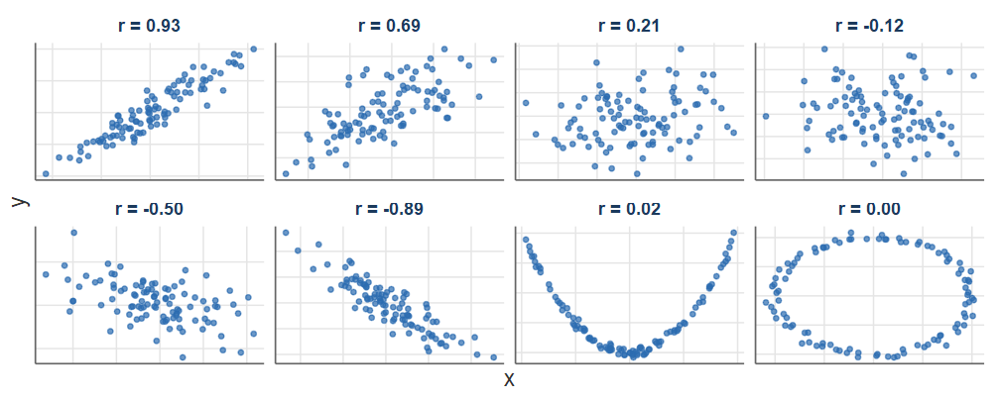
\(r\) măsoară numai asocierea liniară: o dependență funcțională perfectă, dar nemonotonă, poate avea \(r\approx0\).
F. J. Anscombe a construit în 1973 patru seturi de date, fiecare cu \(n=11\) perechi, care au (cu două zecimale) aceleași medii, varianțe, coeficient de corelație și aceeași dreaptă de regresie. Setul este disponibil în R: anscombe.
| Set | \(\bar x\) | \(s_x^2\) | \(\bar y\) | \(s_y^2\) | \(r\) | \(\hat\beta_0\) | \(\hat\beta_1\) | \(R^2\) |
|---|---|---|---|---|---|---|---|---|
| I | 9 | 11 | 7.501 | 4.127 | 0.816 | 3.000 | 0.5 | 0.667 |
| II | 9 | 11 | 7.501 | 4.128 | 0.816 | 3.001 | 0.5 | 0.666 |
| III | 9 | 11 | 7.500 | 4.123 | 0.816 | 3.002 | 0.5 | 0.666 |
| IV | 9 | 11 | 7.501 | 4.123 | 0.817 | 3.002 | 0.5 | 0.667 |
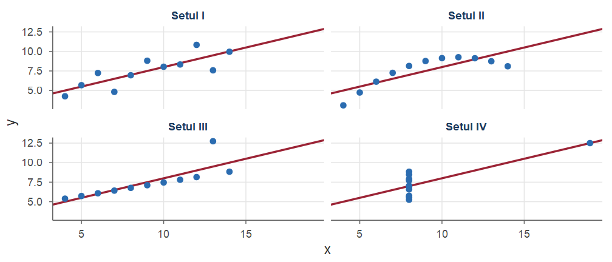
I: model liniar rezonabil; II: dependență curbilinie perfectă; III: o observație aberantă „trage” dreapta; IV: \(r\) mare creat de un singur punct.
Dacă perechile \((X_1,Y_1),\dots,(X_n,Y_n)\) sunt ca un vector \((X,Y)\) cu momente de ordinul doi finite, atunci, din Legea Numerelor Mari, \[ s_{XY}\asto\Cov(X,Y),\qquad s_X\asto\sigma_X,\qquad s_Y\asto\sigma_Y, \] deci \(r\asto\rho(X,Y)\): coeficientul de corelație de selecție este un estimator consistent al coeficientului de corelație teoretic (Cursul 6).
Fie \(x_1,\dots,x_n\) numere reale fixate (nu toate egale). Modelul presupune că observațiile \(Y_1,\dots,Y_n\) satisfac \[ Y_i=\beta_0+\beta_1x_i+\varepsilon_i,\qquad i=1,\dots,n, \] unde \(\beta_0,\beta_1\in\R\) și \(\sigma^2>0\) sunt parametri necunoscuți, iar erorile \(\varepsilon_i\) satisfac:
Modelul normal: în plus, (H4) \(\varepsilon_1,\dots,\varepsilon_n\ \iid\ \Norm(0,\sigma^2)\).
\(\beta_0\) — termen liber (intercept), \(\beta_1\) — panta, \(\sigma^2\) — varianța erorilor.
Din (H1)–(H3): \(\E[Y_i]=\beta_0+\beta_1x_i\) și \(\Var(Y_i)=\sigma^2\).
Considerăm \(x_i\) fixate (de exemplu, nivelurile alese de experimentator). Dacă \(x_i\) sunt observații ale unei variabile aleatoare \(X\), modelul se interpretează condiționat de valorile observate ale lui \(X\). Dacă \((X,Y)\) are repartiție normală bidimensională (Cursul 6): \[ \E[Y\mid X=x]=\mu_Y+\rho\,\frac{\sigma_Y}{\sigma_X}(x-\mu_X),\qquad \Var(Y\mid X=x)=\sigma_Y^2(1-\rho^2), \] deci modelul este exact, cu \[ \beta_1=\rho\,\frac{\sigma_Y}{\sigma_X},\qquad \beta_0=\mu_Y-\beta_1\mu_X,\qquad \sigma^2=\sigma_Y^2(1-\rho^2). \] Aceasta este situația datelor tată–fiu.
Pentru o dreaptă \(y=b_0+b_1x\), abaterea verticală a punctului \(i\) este \(y_i-(b_0+b_1x_i)\). Metoda celor mai mici pătrate (Legendre 1805, Gauss 1809) minimizează suma pătratelor acestor abateri.
Estimatorii celor mai mici pătrate (EMCMP) \(\hat\beta_0,\hat\beta_1\) minimizează \[ Q(b_0,b_1)=\sum_{i=1}^n\big(y_i-b_0-b_1x_i\big)^2,\qquad (b_0,b_1)\in\R^2. \] \(\hat y=\hat\beta_0+\hat\beta_1x\) este dreapta de regresie estimată; \(\hat y_i=\hat\beta_0+\hat\beta_1x_i\) sunt valorile ajustate, \(e_i=y_i-\hat y_i\) sunt reziduurile, iar \(SSE=\sum_{i=1}^n e_i^2=Q(\hat\beta_0,\hat\beta_1)\).
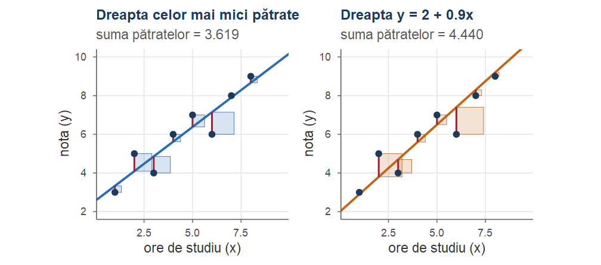
Dacă \(S_{xx}>0\), funcția \(Q\) are un unic punct de minim, dat de \[ \hat\beta_1=\frac{S_{xy}}{S_{xx}}=\frac{\sum_{i=1}^n(x_i-\xbar)(y_i-\bar y_n)}{\sum_{i=1}^n(x_i-\xbar)^2},\qquad \hat\beta_0=\bar y_n-\hat\beta_1\xbar . \] Mai mult, valoarea minimă este \[ SSE=S_{yy}-\frac{S_{xy}^2}{S_{xx}}=S_{yy}\,(1-r^2). \]
Demonstrație. \(Q\) este un polinom de gradul doi în \((b_0,b_1)\). Anulând derivatele parțiale, \[ \frac{\partial Q}{\partial b_0}=-2\sum_{i=1}^n(y_i-b_0-b_1x_i)=0,\qquad \frac{\partial Q}{\partial b_1}=-2\sum_{i=1}^n x_i(y_i-b_0-b_1x_i)=0, \] obținem ecuațiile normale \[ \begin{cases} n\,b_0+b_1\sum_i x_i=\sum_i y_i,\\[2pt] b_0\sum_i x_i+b_1\sum_i x_i^2=\sum_i x_iy_i. \end{cases} \] Din prima ecuație \(b_0=\bar y_n-b_1\xbar\); înlocuind în a doua, \(b_1\big(\sum_ix_i^2-n\xbar^2\big)=\sum_ix_iy_i-n\xbar\bar y_n\), adică \(b_1S_{xx}=S_{xy}\).■
Demonstrație. Sistemul are soluție unică, deoarece determinantul său este \[ n\sum x_i^2-\Big(\sum x_i\Big)^2=n\Big(\sum x_i^2-n\xbar^2\Big)=nS_{xx}>0 . \] Matricea hessiană \[ \nabla^2Q=2\begin{pmatrix} n & \sum x_i\\ \sum x_i & \sum x_i^2\end{pmatrix} \] are urma pozitivă și determinantul \(4nS_{xx}>0\), deci este pozitiv definită (și constantă). Prin urmare \(Q\) este convexă, iar punctul critic este minimul global.■
Demonstrație. Scriem \(y_i-b_0-b_1x_i=(y_i-\bar y_n)-b_1(x_i-\xbar)+(\bar y_n-b_0-b_1\xbar)\). Ridicând la pătrat și sumând, termenii dreptunghiulari care conțin factorul constant \(\bar y_n-b_0-b_1\xbar\) dispar (căci \(\sum(x_i-\xbar)=\sum(y_i-\bar y_n)=0\)): \[ \begin{aligned} Q(b_0,b_1)&=S_{yy}-2b_1S_{xy}+b_1^2S_{xx}+n(\bar y_n-b_0-b_1\xbar)^2\\ &=S_{xx}\Big(b_1-\frac{S_{xy}}{S_{xx}}\Big)^2+\Big(S_{yy}-\frac{S_{xy}^2}{S_{xx}}\Big)+n(\bar y_n-b_0-b_1\xbar)^2 . \end{aligned} \] Primul și ultimul termen sunt \(\ge0\) și se anulează simultan exact pentru \(b_1=S_{xy}/S_{xx}\), \(b_0=\bar y_n-b_1\xbar\); valoarea minimă este termenul din mijloc, \(S_{yy}-S_{xy}^2/S_{xx}=S_{yy}(1-r^2)\).■
Pentru datele din Exemplul 1 (\(S_{xx}=42\), \(S_{xy}=32\), \(S_{yy}=28\), \(\xbar=4.5\), \(\bar y_n=6\)): \[ \hat\beta_1=\frac{32}{42}=\frac{16}{21}\approx 0.7619,\qquad \hat\beta_0=6-\frac{16}{21}\cdot 4.5=\frac{18}{7}\approx 2.5714. \] Dreapta de regresie este \(\hat y=2.5714+0.7619\,x\): fiecare oră suplimentară de studiu pe săptămână este asociată, în medie, cu o creștere a notei de aproximativ \(0.76\) puncte.
Suma pătratelor reziduurilor: \(SSE=28-32^2/42=76/21\approx 3.619\).
lmÎn R, modelul se ajustează cu lm() (linear model), cu sintaxa de tip formulă răspuns ~ predictor:
x <- 1:8; y <- c(3, 5, 4, 6, 7, 6, 8, 9)
m <- lm(y ~ x) # ajustarea modelului y = b0 + b1 x + eroare
coef(m) # estimatorii celor mai mici pătrate
#> (Intercept) x
#> 2.5714 0.7619
round(resid(m), 4) # reziduurile e_i
#> 1 2 3 4 5 6 7 8
#> -0.3333 0.9048 -0.8571 0.3810 0.6190 -1.1429 0.0952 0.3333
sum(resid(m)^2) # SSE
#> [1] 3.619Pentru dreapta celor mai mici pătrate au loc relațiile:
Demonstrație. Relațiile (1) și (2) sunt exact ecuațiile normale scrise pentru \((\hat\beta_0,\hat\beta_1)\). Atunci \(\sum\hat y_ie_i=\hat\beta_0\sum e_i+\hat\beta_1\sum x_ie_i=0\). Din \(\hat\beta_0=\bar y_n-\hat\beta_1\xbar\) rezultă \(\hat\beta_0+\hat\beta_1\xbar=\bar y_n\), iar din (1), \(\frac1n\sum\hat y_i=\frac1n\sum y_i-\frac1n\sum e_i=\bar y_n\).■
Dreapta de regresie a lui \(y\) în funcție de \(x\) nu coincide, în general, cu dreapta de regresie a lui \(x\) în funcție de \(y\).
Pentru a prezice \(x\) din \(y\) nu se inversează ecuația \(\hat y=\hat\beta_0+\hat\beta_1x\)!
Setul cars din R conține viteza (speed, mile/oră) și distanța de oprire (dist, picioare) pentru \(n=50\) de automobile (anii 1920). Avem \(\xbar=15.4\), \(\bar y_n=42.98\), \(S_{xx}=1370\) și \(r=0.8069\).
Dreapta estimată este \(\widehat{\text{dist}}=-17.579+3.932\cdot\text{speed}\): la fiecare creștere a vitezei cu 1 milă/oră, distanța medie de oprire crește cu aproximativ \(3.93\) picioare.
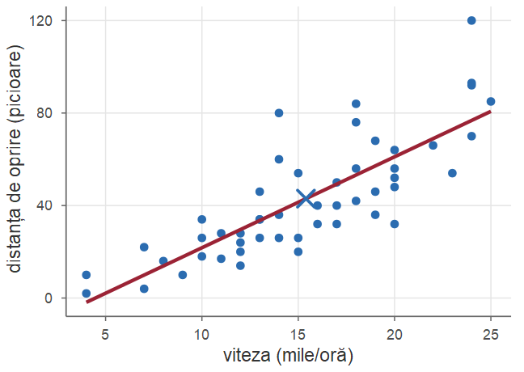
Revenim la modelul probabilist: \(x_i\) fixate, \(Y_i\) aleatoare; \(\hat\beta_0,\hat\beta_1\) sunt variabile aleatoare. Deoarece \(\sum_i(x_i-\xbar)\bar Y_n=0\), \[ \hat\beta_1=\frac{\sum_{i=1}^n(x_i-\xbar)(Y_i-\bar Y_n)}{S_{xx}}=\sum_{i=1}^n c_iY_i,\qquad c_i=\frac{x_i-\xbar}{S_{xx}}, \] iar coeficienții \(c_i\) satisfac \[ \sum_{i=1}^n c_i=0,\qquad \sum_{i=1}^n c_ix_i=\frac{\sum_i (x_i-\xbar)x_i}{S_{xx}}=1,\qquad \sum_{i=1}^n c_i^2=\frac{S_{xx}}{S_{xx}^2}=\frac{1}{S_{xx}}. \] (Am folosit \(\sum_i(x_i-\xbar)x_i=\sum_i(x_i-\xbar)^2=S_{xx}\).)
În ipotezele (H1)–(H3), estimatorii celor mai mici pătrate sunt nedeplasați, \(\E[\hat\beta_0]=\beta_0\), \(\E[\hat\beta_1]=\beta_1\), și \[ \Var(\hat\beta_1)=\frac{\sigma^2}{S_{xx}},\qquad \Var(\hat\beta_0)=\sigma^2\Big(\frac1n+\frac{\xbar^2}{S_{xx}}\Big),\qquad \Cov(\hat\beta_0,\hat\beta_1)=-\frac{\xbar\,\sigma^2}{S_{xx}}. \] În plus, \(\Cov(\bar Y_n,\hat\beta_1)=0\).
Demonstrație. Folosind \(\hat\beta_1=\sum_ic_iY_i\) și proprietățile coeficienților \(c_i\), \[ \E[\hat\beta_1]=\sum_i c_i(\beta_0+\beta_1x_i)=\beta_0\sum_ic_i+\beta_1\sum_ic_ix_i=\beta_1 . \] Deoarece \(Y_i\) sunt necorelate, cu varianța \(\sigma^2\), \[ \Var(\hat\beta_1)=\sigma^2\sum_ic_i^2=\frac{\sigma^2}{S_{xx}},\qquad \Cov(\bar Y_n,\hat\beta_1)=\sum_i\frac1n\, c_i\,\sigma^2=0 . \] Apoi \(\E[\hat\beta_0]=\E[\bar Y_n]-\xbar\,\E[\hat\beta_1]=(\beta_0+\beta_1\xbar)-\beta_1\xbar=\beta_0\).■
Demonstrație. Cum \(\hat\beta_0=\bar Y_n-\xbar\hat\beta_1\) și \(\Cov(\bar Y_n,\hat\beta_1)=0\), \[ \Var(\hat\beta_0)=\Var(\bar Y_n)+\xbar^2\Var(\hat\beta_1)-2\xbar\Cov(\bar Y_n,\hat\beta_1)=\frac{\sigma^2}{n}+\frac{\xbar^2\sigma^2}{S_{xx}} . \] În fine, \[ \Cov(\hat\beta_0,\hat\beta_1)=\Cov(\bar Y_n,\hat\beta_1)-\xbar\Var(\hat\beta_1)=-\frac{\xbar\sigma^2}{S_{xx}}. \]■
\(\Var(\hat\beta_1)=\sigma^2/S_{xx}\): panta este estimată cu atât mai precis cu cât valorile \(x_i\) sunt mai împrăștiate (Exercițiul 10). Dacă toate \(x_i\) sunt apropiate, \(S_{xx}\) este mic și panta este prost determinată.
Estimatorii celor mai mici pătrate au o proprietate de optimalitate remarcabilă, care nu cere normalitatea erorilor.
În ipotezele (H1)–(H3), pentru orice constante \(a_0,a_1\), estimatorul \(a_0\hat\beta_0+a_1\hat\beta_1\) are cea mai mică varianță în clasa tuturor estimatorilor liniari (de forma \(\sum_i d_iY_i\)) și nedeplasați ai lui \(a_0\beta_0+a_1\beta_1\). Spunem că EMCMP sunt estimatori BLUE (best linear unbiased estimators).
Demonstrație. Fie \(\tilde\beta_1=\sum_id_iY_i\) nedeplasat pentru orice \(\beta_0,\beta_1\): \[ \beta_0\sum_id_i+\beta_1\sum_id_ix_i=\beta_1\quad\forall\,\beta_0,\beta_1\ \Longrightarrow\ \sum_id_i=0,\ \ \sum_id_ix_i=1 . \]
\[ \text{Cu }d_i=c_i+(d_i-c_i):\qquad\sum_ic_i(d_i-c_i)=\frac{1}{S_{xx}}\sum_i(x_i-\xbar)d_i-\sum_ic_i^2=\frac{1}{S_{xx}}-\frac{1}{S_{xx}}=0, \] deci \[ \Var(\tilde\beta_1)=\sigma^2\sum_id_i^2=\sigma^2\sum_ic_i^2+\sigma^2\sum_i(d_i-c_i)^2\ge\Var(\hat\beta_1)\qquad(\text{egalitate doar pentru }d_i=c_i). \]■
În ipotezele (H1)–(H3), \(\E[e_i]=0\), \(\Var(e_i)=\sigma^2(1-h_{ii})\) și \(\E[SSE]=(n-2)\sigma^2\). Prin urmare \(\hat\sigma^2=\dfrac{SSE}{n-2}\) este un estimator nedeplasat al lui \(\sigma^2\).
Demonstrație. Din nedeplasare, \(\E[\hat Y_i]=\beta_0+\beta_1x_i=\E[Y_i]\), deci \(\E[e_i]=0\). Deoarece \(\hat Y_i=\bar Y_n+\hat\beta_1(x_i-\xbar)\), \[ \hat Y_i=\sum_jh_{ij}Y_j,\qquad h_{ij}=\frac1n+\frac{(x_i-\xbar)(x_j-\xbar)}{S_{xx}} . \] Un calcul direct (termenul dreptunghiular conține \(\sum_j(x_j-\xbar)=0\)) dă \[ \sum_jh_{ij}^2=\frac1n+\frac{(x_i-\xbar)^2}{S_{xx}^2}\sum_j(x_j-\xbar)^2=\frac1n+\frac{(x_i-\xbar)^2}{S_{xx}}=h_{ii}. \]■
Demonstrație. Atunci \(e_i=Y_i-\hat Y_i=(1-h_{ii})Y_i-\sum_{j\ne i}h_{ij}Y_j\) și, \(Y_j\) fiind necorelate cu varianța \(\sigma^2\), \[ \Var(e_i)=\sigma^2\Big[(1-h_{ii})^2+\sum_{j\ne i}h_{ij}^2\Big]=\sigma^2\Big[1-2h_{ii}+\sum_jh_{ij}^2\Big]=\sigma^2(1-h_{ii}). \] În final, cum \(\E[e_i]=0\), \[ \E[SSE]=\sum_i\E[e_i^2]=\sum_i\Var(e_i)=\sigma^2\Big(n-\sum_ih_{ii}\Big)=(n-2)\sigma^2 . \]■
Înlocuind \(\sigma\) cu \(\hat\sigma=\sqrt{\hat\sigma^2}\) în formulele varianțelor obținem erorile standard ale estimatorilor: \[ \operatorname{se}(\hat\beta_1)=\frac{\hat\sigma}{\sqrt{S_{xx}}},\qquad \operatorname{se}(\hat\beta_0)=\hat\sigma\sqrt{\frac1n+\frac{\xbar^2}{S_{xx}}} . \]
Verificăm prin simulare Teorema 7 și Propoziția 9: \(x_i=i\), \(i=1,\dots,20\) (\(S_{xx}=665\)), \(\beta_0=2\), \(\beta_1=0.5\), \(\sigma=1\); \(10\,000\) de eșantioane din model.
set.seed(123)
x <- 1:20; n <- 20; Sxx <- sum((x - mean(x))^2)
sim <- replicate(10000, {
y <- 2 + 0.5 * x + rnorm(n, 0, 1) # un eșantion din model
m <- lm(y ~ x)
c(b1 = coef(m)[[2]], s2 = sum(resid(m)^2) / (n - 2))
})
c(media_b1 = mean(sim["b1", ]), var_b1 = var(sim["b1", ]), teoretic = 1 / Sxx,
media_s2 = mean(sim["s2", ]))
#> media_b1 var_b1 teoretic media_s2
#> 0.500314 0.001485 0.001504 1.005529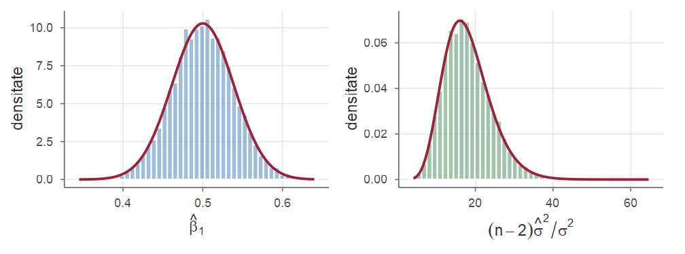
Media pantelor \(\approx0.5\), varianța \(\approx1/665\approx0.0015\), media lui \(\hat\sigma^2\approx1\); repartițiile exacte (curbele roșii) vin din Teorema 12 (Partea III).
Cât de bine explică dreapta variabilitatea răspunsului? Pentru fiecare observație, \[ \underbrace{y_i-\bar y_n}_{\text{abaterea totală}}=\underbrace{(\hat y_i-\bar y_n)}_{\text{explicată de regresie}}+\underbrace{(y_i-\hat y_i)}_{\text{reziduu}} . \] Notăm \[ SST=\sum_{i=1}^n(y_i-\bar y_n)^2=S_{yy},\qquad SSR=\sum_{i=1}^n(\hat y_i-\bar y_n)^2,\qquad SSE=\sum_{i=1}^n(y_i-\hat y_i)^2, \] suma totală a pătratelor, suma pătratelor datorată regresiei și suma pătratelor reziduurilor.
Pentru dreapta celor mai mici pătrate, \[ SST=SSR+SSE,\qquad\text{unde}\qquad SSR=\hat\beta_1^2S_{xx}=\frac{S_{xy}^2}{S_{xx}} . \]
Demonstrație. Ridicând la pătrat descompunerea și sumând, \(SST=SSR+SSE+2\sum_i(\hat y_i-\bar y_n)e_i\), iar termenul dreptunghiular este \(2\sum_i\hat y_ie_i-2\bar y_n\sum_ie_i=0\), conform Propoziției 6. Apoi \(\hat y_i-\bar y_n=\hat\beta_1(x_i-\xbar)\), deci \(SSR=\hat\beta_1^2S_{xx}=S_{xy}^2/S_{xx}\).■
Coeficientul de determinare este \[ R^2=\frac{SSR}{SST}=1-\frac{SSE}{SST}\in[0,1], \] și reprezintă proporția din variabilitatea totală a răspunsului explicată de modelul liniar.
Pentru datele din Exemplul 1: \(SST=S_{yy}=28\), \(SSR=32^2/42=512/21\approx 24.381\) și \(SSE=28-24.381=76/21\approx 3.619\). Deci \(R^2=24.381/28\approx 0.8707=r^2=0.9331^2\): aproximativ \(87\%\) din variabilitatea notelor este explicată liniar de orele de studiu. Estimatorul varianței erorilor este \(\hat\sigma^2=SSE/(n-2)=3.619/6\approx 0.6032\), \(\hat\sigma\approx 0.7766\), iar \[ \operatorname{se}(\hat\beta_1)=\frac{0.7766}{\sqrt{42}}\approx 0.1198,\qquad \operatorname{se}(\hat\beta_0)=0.7766\sqrt{\frac18+\frac{4.5^2}{42}}\approx 0.6052 . \]
| Sursa variației | Grade de libertate | Suma pătratelor | Media pătratelor | Statistica \(F\) |
|---|---|---|---|---|
| Regresie | \(1\) | \(SSR\) | \(MSR=SSR/1\) | \(F=MSR/MSE\) |
| Reziduală | \(n-2\) | \(SSE\) | \(MSE=SSE/(n-2)=\hat\sigma^2\) | |
| Total | \(n-1\) | \(SST\) |
Pentru intervale de încredere și teste avem nevoie de repartițiile exacte ale estimatorilor, obținute în modelul normal (H4), ca la eșantionarea dintr-o populație normală (Cursul 8).
În ipotezele (H1)–(H4):
Demonstrație. Punctul (1): \(\hat\beta_0\) și \(\hat\beta_1\) sunt combinații liniare ale variabilelor normale independente \(Y_1,\dots,Y_n\), deci sunt normale; media și varianța sunt date de Teorema 7.
Punctele (2)–(3). Fie \[ \mathbf u_1=\frac{1}{\sqrt n}\mathbf 1,\qquad \mathbf u_2=\frac{1}{\sqrt{S_{xx}}}(x_1-\xbar,\dots,x_n-\xbar); \] acești vectori sunt ortonormați în \(\R^n\). Completăm la o bază ortonormată \(\mathbf u_1,\dots,\mathbf u_n\) și fie \(U\) matricea ortogonală cu liniile \(\mathbf u_k^{\mathsf T}\). Vectorul \(\mathbf Z=U\mathbf Y\) are componente independente, \(Z_k\sim\Norm(\mathbf u_k^{\mathsf T}\E[\mathbf Y],\sigma^2)\) (ca în demonstrația teoremei lui Fisher, Cursul 8).■
Demonstrație. Cum \(\E[\mathbf Y]=\beta_0\mathbf 1+\beta_1\bx\) aparține subspațiului generat de \(\mathbf u_1,\mathbf u_2\), avem \(\E[Z_k]=0\) pentru \(k\ge3\). Pe de altă parte, \[ Z_1=\sqrt n\,\bar Y_n,\qquad Z_2=\frac{S_{xY}}{\sqrt{S_{xx}}}=\sqrt{S_{xx}}\,\hat\beta_1, \] deci \((\hat\beta_0,\hat\beta_1)\) este funcție de \((Z_1,Z_2)\). Vectorul valorilor ajustate este proiecția ortogonală a lui \(\mathbf Y\) pe subspațiul generat de \(\mathbf u_1,\mathbf u_2\), adică \(Z_1\mathbf u_1+Z_2\mathbf u_2\), așa că \(SSE=\|\mathbf Y\|^2-Z_1^2-Z_2^2=\sum_{k=3}^n Z_k^2\). Deci \(SSE/\sigma^2\) este suma pătratelor a \(n-2\) variabile \(\Norm(0,1)\) independente, adică \(\chisq{n-2}\), independentă de \((Z_1,Z_2)\), deci de \((\hat\beta_0,\hat\beta_1)\).■
În modelul normal, \[ T_1=\frac{\hat\beta_1-\beta_1}{\operatorname{se}(\hat\beta_1)}=\frac{\hat\beta_1-\beta_1}{\hat\sigma/\sqrt{S_{xx}}}\sim\Stud{n-2},\qquad T_0=\frac{\hat\beta_0-\beta_0}{\operatorname{se}(\hat\beta_0)}\sim\Stud{n-2}. \]
Într-adevăr, \[ T_1=\frac{(\hat\beta_1-\beta_1)\big/(\sigma/\sqrt{S_{xx}})}{\sqrt{\dfrac{(n-2)\hat\sigma^2/\sigma^2}{n-2}}},\quad\text{numărător }\Norm(0,1),\ \text{numitor } \sqrt{\chisq{n-2}/(n-2)}\ \text{independent}. \]
Din Corolarul 13, intervalele de încredere de nivel \(1-\alpha\) sunt: \[
\hat\beta_1\pm t_{n-2;1-\alpha/2}\,\frac{\hat\sigma}{\sqrt{S_{xx}}},\qquad
\hat\beta_0\pm t_{n-2;1-\alpha/2}\,\hat\sigma\sqrt{\frac1n+\frac{\xbar^2}{S_{xx}}},
\] unde \(t_{n-2;1-\alpha/2}\) = qt(1 - alpha/2, n - 2).
Pentru varianța erorilor, din \(SSE/\sigma^2\sim\chisq{n-2}\): \[ \Big[\frac{SSE}{\chi^2_{n-2;1-\alpha/2}},\ \frac{SSE}{\chi^2_{n-2;\alpha/2}}\Big]. \]
Cea mai importantă ipoteză: \(H_0:\beta_1=0\) — media răspunsului nu depinde (liniar) de \(x\). Pentru \(H_0:\beta_1=b\): \[ T=\frac{\hat\beta_1-b}{\hat\sigma/\sqrt{S_{xx}}}\ \overset{H_0}{\sim}\ \Stud{n-2}. \]
| Ipoteza alternativă | Regiunea critică | \(p\)-valoarea (\(T\sim\Stud{n-2}\)) |
|---|---|---|
| \(H_1:\beta_1\neq b\) | \(\lvert t\rvert\ge t_{n-2;1-\alpha/2}\) | \(2\,\PP(T\ge \lvert t\rvert)\) |
| \(H_1:\beta_1> b\) | \(t\ge t_{n-2;1-\alpha}\) | \(\PP(T\ge t)\) |
| \(H_1:\beta_1< b\) | \(t\le -t_{n-2;1-\alpha}\) | \(\PP(T\le t)\) |
Analog se testează ipoteze despre \(\beta_0\), folosind \(T_0\).
Continuăm Exemplul 6. Pentru \(H_0:\beta_1=0\) vs. \(H_1:\beta_1\ne0\), \[ t=\frac{0.7619}{0.1198}\approx 6.358,\qquad t_{6;0.975}=2.4469 . \] Cum \(|t|>2.4469\), respingem \(H_0\) la nivelul \(\alpha=0.05\); \(p\)-valoarea este \(2\PP(T\ge 6.358)\approx 0.0007\), \(T\sim\Stud{6}\). IÎ de \(95\%\) pentru pantă: \[ 0.7619\pm 2.4469\cdot 0.1198=[0.4687,\ 1.0551]. \]
summary și confintToate aceste valori apar în rezultatul funcțiilor summary() și confint():
Sub \(H_0:\beta_1=0\): \(\hat\beta_1^2S_{xx}/\sigma^2=SSR/\sigma^2\sim\chisq{1}\), independentă de \(SSE/\sigma^2\sim\chisq{n-2}\), deci \[ F=\frac{SSR/1}{SSE/(n-2)}=\frac{MSR}{MSE}\ \overset{H_0}{\sim}\ \Fish{1}{n-2}; \] \(H_0\) se respinge pentru valori mari: \(F\ge F_{1,n-2;1-\alpha}\).
Folosind \(SSE=S_{yy}(1-r^2)\) și \(\hat\beta_1=r\sqrt{S_{yy}/S_{xx}}\), statistica \(T\) pentru \(H_0:\beta_1=0\) se exprimă numai prin \(r\): \[ T=\frac{\hat\beta_1\sqrt{S_{xx}}}{\hat\sigma}=\frac{r\sqrt{S_{yy}}}{\sqrt{S_{yy}(1-r^2)/(n-2)}}=\frac{r\sqrt{n-2}}{\sqrt{1-r^2}} . \]
cor.test().În modelul normal (H1)–(H4), estimatorii de verosimilitate maximă ai lui \((\beta_0,\beta_1)\) coincid cu estimatorii celor mai mici pătrate, iar estimatorul de verosimilitate maximă al lui \(\sigma^2\) este \(\tilde\sigma^2=SSE/n\) (deplasat).
Demonstrație. \(Y_i\sim\Norm(\beta_0+\beta_1x_i,\sigma^2)\) independente, deci log-verosimilitatea este \[ \ell(\beta_0,\beta_1,\sigma^2)=-\frac n2\ln(2\pi\sigma^2)-\frac{1}{2\sigma^2}\sum_{i=1}^n(y_i-\beta_0-\beta_1x_i)^2=-\frac n2\ln(2\pi\sigma^2)-\frac{Q}{2\sigma^2}, \] cu \(Q=Q(\beta_0,\beta_1)\). Pentru orice \(\sigma^2\) fixat, maximul în \((\beta_0,\beta_1)\) se atinge în \((\hat\beta_0,\hat\beta_1)\), minimul lui \(Q\).■
Demonstrație. Rămâne de maximizat în \(\sigma^2\) funcția \[ g(\sigma^2)=-\frac n2\ln\sigma^2-\frac{SSE}{2\sigma^2},\qquad g'(\sigma^2)=-\frac{n}{2\sigma^2}+\frac{SSE}{2\sigma^4}, \] care se anulează în \(\tilde\sigma^2=SSE/n\); \(g'>0\) la stânga și \(g'<0\) la dreapta, deci este punct de maxim.
Cum \(\E[SSE]=(n-2)\sigma^2\), avem \(\E[\tilde\sigma^2]=\frac{n-2}{n}\sigma^2\): \(\tilde\sigma^2\) este deplasat, dar asimptotic nedeplasat.■
summary (cars)Funcția summary() aplicată unui obiect lm afișează:
Rezultatul pentru modelul dist ~ speed este pe slide-ul următor.
print(summary(m_cars), digits = 5)#>
#> Call:
#> lm(formula = dist ~ speed, data = cars)
#>
#> Residuals:
#> Min 1Q Median 3Q Max
#> -29.0691 -9.5253 -2.2719 9.2147 43.2013
#>
#> Coefficients:
#> Estimate Std. Error t value Pr(>|t|)
#> (Intercept) -17.57909 6.75844 -2.6011 0.01232
#> speed 3.93241 0.41551 9.4640 1.49e-12
#>
#> Residual standard error: 15.38 on 48 degrees of freedom
#> Multiple R-squared: 0.65108, Adjusted R-squared: 0.64381
#> F-statistic: 89.567 on 1 and 48 DF, p-value: 1.4898e-12carsPentru o valoare nouă \(x_0\) a predictorului:
Care este răspunsul mediu \(\mu(x_0)=\beta_0+\beta_1x_0\) pentru toți indivizii cu valoarea \(x_0\)? (Distanța medie de oprire a automobilelor care rulează cu 21 mile/oră.)
Care va fi valoarea unei observații noi \(Y_0=\beta_0+\beta_1x_0+\varepsilon_0\)? (Distanța de oprire a unui anumit automobil care rulează cu 21 mile/oră.)
Fie \(\hat Y_0=\hat\beta_0+\hat\beta_1x_0=\bar Y_n+\hat\beta_1(x_0-\xbar)\). În ipotezele (H1)–(H3), \[ \Var(\hat Y_0)=\sigma^2\Big(\frac1n+\frac{(x_0-\xbar)^2}{S_{xx}}\Big). \] Dacă \(Y_0=\beta_0+\beta_1x_0+\varepsilon_0\), cu \(\varepsilon_0\) necorelată cu \(\varepsilon_1,\dots,\varepsilon_n\), atunci \(\E[Y_0-\hat Y_0]=0\) și \[ \Var(Y_0-\hat Y_0)=\sigma^2\Big(1+\frac1n+\frac{(x_0-\xbar)^2}{S_{xx}}\Big). \]
În modelul normal, un interval de încredere de nivel \(1-\alpha\) pentru răspunsul mediu \(\mu(x_0)\) este \[ \hat y_0\pm t_{n-2;1-\alpha/2}\;\hat\sigma\sqrt{\frac1n+\frac{(x_0-\xbar)^2}{S_{xx}}}, \] iar un interval de predicție de nivel \(1-\alpha\) pentru observația nouă \(Y_0\) (cu \(\varepsilon_0\sim\Norm(0,\sigma^2)\) independentă de eșantion) este \[ \hat y_0\pm t_{n-2;1-\alpha/2}\;\hat\sigma\sqrt{1+\frac1n+\frac{(x_0-\xbar)^2}{S_{xx}}}. \]
Demonstrație. Cum \(\Cov(\bar Y_n,\hat\beta_1)=0\) (Teorema 7), \(\Var(\hat Y_0)=\frac{\sigma^2}{n}+(x_0-\xbar)^2\frac{\sigma^2}{S_{xx}}\). Apoi \(\hat Y_0\) depinde doar de \(Y_1,\dots,Y_n\), iar \(\varepsilon_0\) este necorelată cu acestea, deci \(\Var(Y_0-\hat Y_0)=\Var(\varepsilon_0)+\Var(\hat Y_0)\), iar \(\E[Y_0-\hat Y_0]=\mu(x_0)-\mu(x_0)=0\).
În modelul normal, \[ \frac{\hat Y_0-\mu(x_0)}{\sqrt{\Var(\hat Y_0)}}\sim\Norm(0,1),\qquad \frac{Y_0-\hat Y_0}{\sqrt{\Var(Y_0-\hat Y_0)}}\sim\Norm(0,1), \] independente de \(\hat\sigma^2\) (Teorema 12; \(\varepsilon_0\) independentă de eșantion). Înlocuind \(\sigma\) cu \(\hat\sigma\) obținem statistici \(\Stud{n-2}\), de unde intervalele.■
carsViteza \(x_0=21\) mile/oră: \(\hat y_0=-17.579+3.932\cdot 21\approx 65.00\) picioare; \(\xbar=15.4\), \(S_{xx}=1370\), \(\hat\sigma=15.38\), \(t_{48;0.975}=2.0106\).
IÎ pentru distanța medie: \[ 65.00\pm 2.0106\cdot 15.38\sqrt{\tfrac{1}{50}+\tfrac{(21-15.4)^2}{1370}}=65.00\pm 6.40=[58.60,\ 71.41]. \] Interval de predicție pentru un automobil anume: \[ 65.00\pm 2.0106\cdot 15.38\sqrt{1+\tfrac{1}{50}+\tfrac{(21-15.4)^2}{1370}}=65.00\pm 31.58=[33.42,\ 96.58]. \]
predictFormulele presupun că modelul liniar este corect și pentru \(x_0\). În afara domeniului observat al predictorului (extrapolare) liniaritatea nu mai este confirmată de date, iar intervalele devin înșelătoare. De exemplu, dreapta pentru cars prezice o distanță de oprire negativă pentru viteze sub \(4.5\) mile/oră. Extrapolările trebuie evitate sau făcute cu mare prudență.
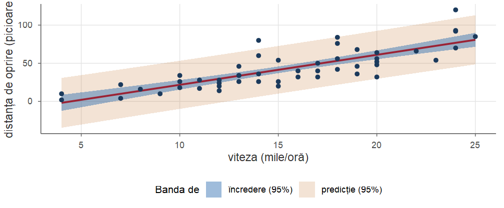
cars: dreapta de regresie, banda de încredere de 95% (interioară) și banda de predicție de 95% (exterioară).Aproximativ \(95\%\) dintre puncte sunt în banda de predicție; banda de încredere se referă la dreapta mediilor, nu la puncte individuale.
rstandard(m); ponderile de influență: hatvalues(m).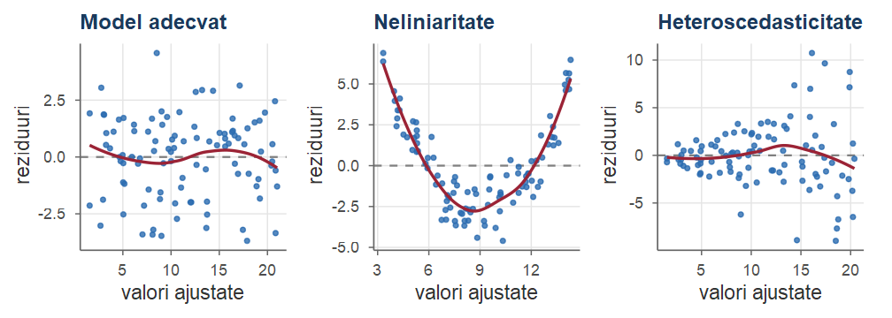
carsReziduurile standardizate și ponderile de influență pentru m_cars:
Trei observații (23, 35 și 49) au \(|r_i|>2\) — compatibil cu ce ne așteptăm la \(n=50\) (aproximativ \(5\%\)). Suma ponderilor de influență este \(2\).
cars: grafice de diagnostic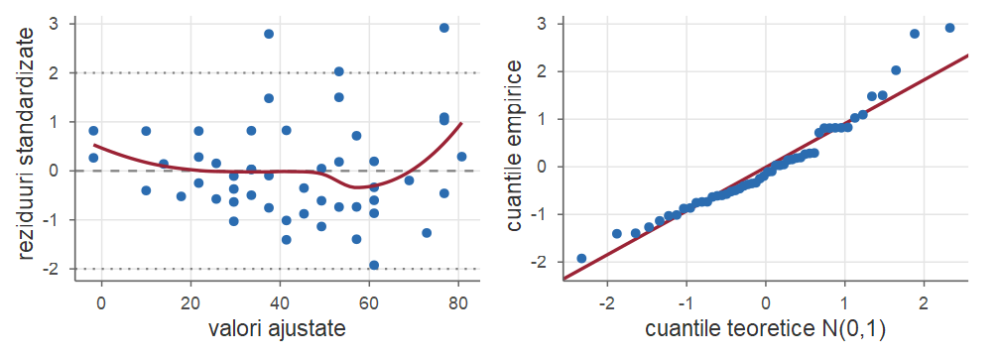
dist ~ speed: reziduuri standardizate vs. valori ajustate (stânga) și QQ-plot (dreapta).Împrăștierea crește ușor cu valorile ajustate; coada dreaptă este mai grea decât cea normală. Fizic, distanța de frânare crește aproximativ pătratic cu viteza: modelul sqrt(dist) ~ speed corectează ambele probleme (Exercițiul 12).
cooks.distance(m)).O observație aberantă nu se elimină automat: poate fi o eroare de înregistrare (se corectează sau se elimină, cu justificare) sau cea mai interesantă observație din eșantion. Raportați analiza cu și fără observațiile suspecte.
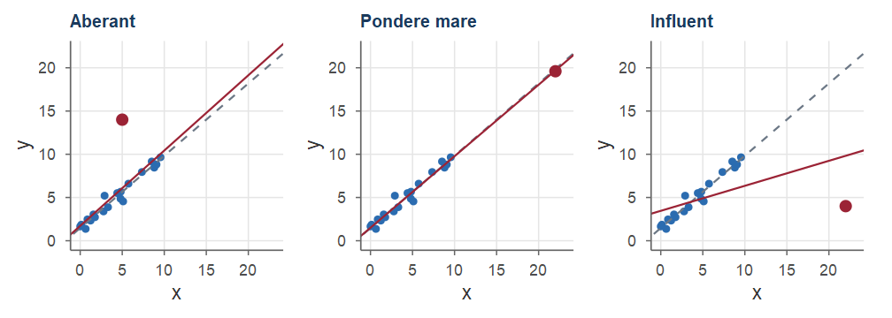
Pe litoral, vânzările zilnice de înghețată și numărul de înecuri sunt puternic corelate pozitiv. Înghețata nu provoacă înecuri: ambele cresc în zilele călduroase, când mai mulți oameni merg la plajă — temperatura este variabila de confuzie. Incluzând temperatura în model (regresie multiplă), asocierea dispare practic. Cu date reale: Exemplul 14.
Ori de câte ori două măsurători sunt imperfect corelate, valorile extreme la prima măsurătoare sunt urmate, în medie, de valori mai puțin extreme la a doua. Ignorarea acestui fapt: eroarea de regresie (regression fallacy).
Daniel Kahneman relatează că instructorii unei școli de pilotaj observaseră că după o lăudare pentru un zbor excelent, următorul zbor era de obicei mai slab, iar după o mustrare pentru un zbor foarte slab, următorul era de obicei mai bun. Concluzia lor („lauda strică, pedeapsa ajută”) era greșită: performanța conține o componentă aleatoare, iar după un zbor extrem următorul tinde spre media cursantului, indiferent de reacția instructorului. Analog, pacienții se prezintă la medic când simptomele sunt cele mai grave și se simt, în medie, mai bine la vizita următoare chiar fără tratament — de aceea studiile clinice au nevoie de un grup de control.
\[ \mathbf Y=\begin{pmatrix}Y_1\\ Y_2\\ \cdots\\ Y_n\end{pmatrix},\qquad X=\begin{pmatrix}1 & x_1\\ 1 & x_2\\ \cdots & \cdots\\ 1 & x_n\end{pmatrix},\qquad \bbeta=\begin{pmatrix}\beta_0\\ \beta_1\end{pmatrix},\qquad \boldsymbol\varepsilon=\begin{pmatrix}\varepsilon_1\\ \varepsilon_2\\ \cdots\\ \varepsilon_n\end{pmatrix}; \] atunci \(\mathbf Y=X\bbeta+\boldsymbol\varepsilon\), cu \(\E[\boldsymbol\varepsilon]=\mathbf 0\) și \(\Var(\boldsymbol\varepsilon)=\sigma^2I_n\); \(X\) este matricea de design.
\[ X^{\mathsf T} X=\begin{pmatrix} n & \sum x_i\\ \sum x_i & \sum x_i^2\end{pmatrix},\qquad \det(X^{\mathsf T} X)=nS_{xx}, \] \[ (X^{\mathsf T} X)^{-1}=\frac{1}{nS_{xx}}\begin{pmatrix}\sum x_i^2 & -\sum x_i\\ -\sum x_i & n\end{pmatrix}. \] Cu \(\sum x_i^2=S_{xx}+n\xbar^2\), elementele lui \(\sigma^2(X^{\mathsf T} X)^{-1}\) sunt exact \[ \frac{\sigma^2(S_{xx}+n\xbar^2)}{nS_{xx}}=\sigma^2\Big(\frac1n+\frac{\xbar^2}{S_{xx}}\Big)=\Var(\hat\beta_0),\quad -\frac{\sigma^2 n\xbar}{nS_{xx}}=\Cov(\hat\beta_0,\hat\beta_1),\quad \frac{\sigma^2}{S_{xx}}=\Var(\hat\beta_1). \]
Norul de puncte urmează o curbă? Formula \(\hat{\bbeta}=(X^{\mathsf T}X)^{-1}X^{\mathsf T}\mathbf Y\) nu cere ca \(X\) să aibă doar două coloane: adăugăm coloane cu puterile lui \(x\).
Modelul de regresie polinomială de gradul \(d\) este \[ Y_i=\beta_0+\beta_1x_i+\beta_2x_i^2+\dots+\beta_dx_i^d+\varepsilon_i,\qquad i=1,\dots,n, \] adică \(\mathbf Y=X\bbeta+\boldsymbol\varepsilon\), unde linia \(i\) a matricei de design \(X\) este \((1,\ x_i,\ x_i^2,\ \dots,\ x_i^d)\).
lm(y ~ x + I(x^2)) sau lm(y ~ poly(x, d)). Rămâne întrebarea: ce grad alegem?\(n=15\) observații \(y_i=\sin(2\pi x_i)+\varepsilon_i\), cu \(\varepsilon_i\sim\Norm(0,0.3^2)\): datele de antrenare. Pentru fiecare grad calculăm \(R^2\), eroarea de antrenare \(SSE/n\) și eroarea de test, pe \(1000\) de observații noi.
set.seed(184); n <- 15; sigma <- 0.3
f <- function(x) sinpi(2 * x) # semnalul f(x) = sin(2 pi x)
x <- seq(0, 1, length.out = n); y <- f(x) + rnorm(n, 0, sigma) # antrenare
xt <- runif(1000); yt <- f(xt) + rnorm(1000, 0, sigma) # test
err <- sapply(c(1, 3, 5, 8, 12), function(d) {
m <- lm(y ~ poly(x, d)) # polinomul de gradul d
c(grad = d, R2 = summary(m)$r.squared, antrenare = mean(resid(m)^2),
test = mean((yt - predict(m, data.frame(x = xt)))^2))
})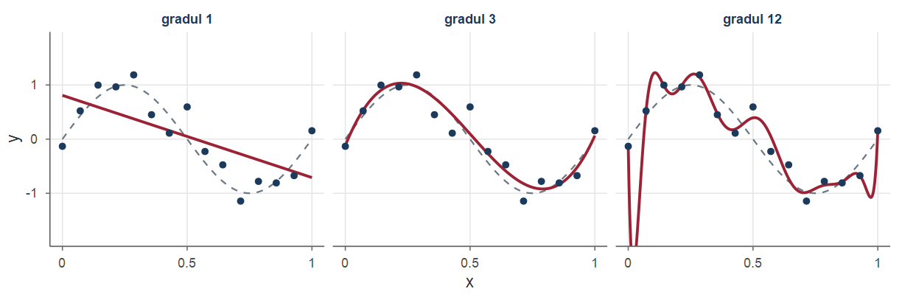
\(\hat f(x_0)\) este un estimator al lui \(f(x_0)\): eroarea pătratică medie este pătratul deplasării plus varianța (Teorema 6 din Cursul 9). Pentru o observație nouă \(Y_0=f(x_0)+\varepsilon_0\) se adaugă \(\sigma^2\): \[ \E\big[(Y_0-\hat f(x_0))^2\big]=\sigma^2+\big(\E[\hat f(x_0)]-f(x_0)\big)^2+\Var\big(\hat f(x_0)\big). \]
Coeficienții polinomului de gradul \(12\) sunt uriași și de semne alternante. Ideea: păstrăm modelul flexibil, dar penalizăm coeficienții mari.
Pentru orice \(\lambda>0\), funcția \(Q_\lambda(\mathbf b)=\|\mathbf Y-X\mathbf b\|^2+\lambda\|\mathbf b\|^2\) are un unic punct de minim, estimatorul ridge \[ \hat{\bbeta}_\lambda=(X^{\mathsf T}X+\lambda I)^{-1}X^{\mathsf T}\mathbf Y . \]
Aceleași date; \(Z\) = coloanele \(x,x^2,\dots,x^{12}\) standardizate. Pentru \(\lambda=0\), \(Z^{\mathsf T}Z\) este numeric singulară: folosim qr.solve, ca lm.
d <- 12; P <- function(u) outer(u, 1:d, "^") # coloanele u, u^2, ..., u^12
Z <- scale(P(x)); yc <- y - mean(y) # standardizare; y centrat
ridge <- function(lam) if (lam == 0) qr.solve(Z, yc, tol = 1e-12) else
solve(crossprod(Z) + lam * diag(d), crossprod(Z, yc)) # formula ridge
tabel_ridge(c(0, 1e-6, 1e-3, 100)) # max |coef.|, erori: antrenare, test
#> lambda max_coef antrenare test
#> 1 0 1.97e+07 0.0148 0.3969
#> 2 1e-06 61.2 0.0399 0.1111
#> 3 0.001 6.72 0.0471 0.1034
#> 4 100 0.0443 0.3850 0.4816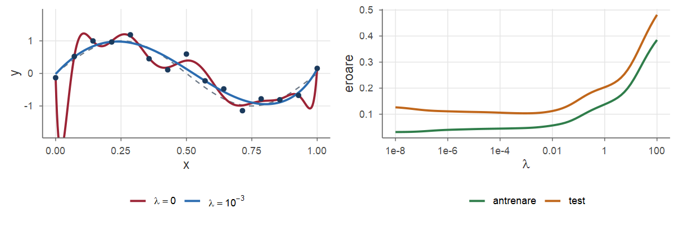
Cu \(p\) predictori \(x^{(1)},\dots,x^{(p)}\): \[ Y_i=\beta_0+\beta_1x_i^{(1)}+\dots+\beta_px_i^{(p)}+\varepsilon_i,\qquad i=1,\dots,n, \] matricea de design \(X\) are dimensiunea \(n\times(p+1)\). Rezultatele se păstrează, cu modificări minore:
Interpretare: \(\beta_j\) = modificarea medie a răspunsului când \(x^{(j)}\) crește cu o unitate, ceilalți predictori fiind menținuți constanți (ceteris paribus).
mtcars: 32 de automobile; consumul mpg (mile/galon), masa wt (mii de livre), puterea hp (cai putere). Regresia simplă mpg ~ wt vs. regresia multiplă mpg ~ wt + hp:
coef(lm(mpg ~ wt, data = mtcars)) # regresie simplă
#> (Intercept) wt
#> 37.285 -5.344
m2 <- lm(mpg ~ wt + hp, data = mtcars) # regresie multiplă
round(summary(m2)$coefficients, 5)
#> Estimate Std. Error t value Pr(>|t|)
#> (Intercept) 37.22727 1.59879 23.285 0.00000
#> wt -3.87783 0.63273 -6.129 0.00000
#> hp -0.03177 0.00903 -3.519 0.00145Verificarea directă a formulei \(\hat{\bbeta}=(X^{\mathsf T} X)^{-1}X^{\mathsf T}\mathbf Y\):
Regresia liniară este „liniară” în parametri, nu neapărat în predictori. Modele ca \[ Y=\beta_0+\beta_1x+\beta_2x^2+\varepsilon\quad\text{(regresie polinomială)},\qquad \ln Y=\beta_0+\beta_1\ln x+\varepsilon \] se tratează cu exact aceleași metode, alegând convenabil coloanele matricei de design (Exercițiul 8).
Se dau observațiile
| \(x_i\) | 1 | 2 | 4 | 5 | 8 |
|---|---|---|---|---|---|
| \(y_i\) | 2 | 5 | 5 | 8 | 10 |
Calculați coeficientul de corelație \(r\).
Determinați dreapta celor mai mici pătrate și reziduurile; verificați că \(\sum e_i=0\) și \(\sum x_ie_i=0\).
Calculați \(R^2\) și \(\hat\sigma^2\).
\(n=5\), \(\sum x_i=20\), \(\sum y_i=30\), \(\sum x_i^2=110\), \(\sum y_i^2=218\), \(\sum x_iy_i=152\), deci \(\xbar=4\), \(\bar y_n=6\) și \[ S_{xx}=110-5\cdot16=30,\qquad S_{yy}=218-5\cdot36=38,\qquad S_{xy}=152-5\cdot4\cdot6=32, \] \(r=32/\sqrt{30\cdot38}=32/\sqrt{1140}\approx0.9478\).
\(\hat\beta_1=32/30=16/15\approx1.0667\), \(\hat\beta_0=6-\frac{16}{15}\cdot4=\frac{26}{15}\approx1.7333\): \(\hat y=1.7333+1.0667x\). Valorile ajustate: \(2.8,\ 3.8667,\ 6,\ 7.0667,\ 10.2667\); reziduurile \[ e=(-0.8,\ 1.1333,\ -1,\ 0.9333,\ -0.2667). \] \(\sum e_i=0\) și \(\sum x_ie_i=\frac{-12+34-60+70-32}{15}=0\).
O firmă a înregistrat, timp de \(n=10\) luni, cheltuielile de publicitate \(x\) (mii lei) și vânzările \(y\) (zeci de mii de lei): \[ \textstyle\sum x_i=54,\quad \sum y_i=202,\quad \sum x_i^2=336,\quad \sum y_i^2=4328,\quad \sum x_iy_i=1195 . \]
Estimați dreapta de regresie și interpretați panta.
Calculați \(R^2\) și \(\hat\sigma\).
Construiți un interval de încredere de \(95\%\) pentru \(\beta_1\).
Conducerea susține că fiecare mie de lei cheltuită în publicitate aduce, în medie, mai mult de 2 unități de vânzări. Testați \(H_0:\beta_1=2\) vs. \(H_1:\beta_1>2\) la nivelul \(\alpha=0.05\).
\(\xbar=5.4\), \(\bar y_n=20.2\), \(S_{xx}=336-10\cdot5.4^2=44.4\), \(S_{xy}=1195-10\cdot5.4\cdot20.2=104.2\), \(S_{yy}=4328-10\cdot20.2^2=247.6\). Deci \[ \hat\beta_1=\frac{104.2}{44.4}\approx2.3468,\qquad \hat\beta_0=20.2-2.3468\cdot5.4\approx7.5270 . \] Fiecare mie de lei suplimentară cheltuită pe publicitate este asociată cu o creștere medie a vânzărilor de circa \(2.35\) zeci de mii de lei.
\(SSR=104.2^2/44.4\approx244.541\), \(SSE=247.6-244.541=3.059\), \(R^2=244.541/247.6\approx0.9876\), \(\hat\sigma^2=3.059/8\approx0.3824\), \(\hat\sigma\approx0.6183\).
\(\operatorname{se}(\hat\beta_1)=0.6183/\sqrt{44.4}\approx0.09279\) și \(t_{8;0.975}=2.3060\), deci IÎ este \(2.3468\pm2.3060\cdot0.09279=2.3468\pm0.2140=[2.1329,\ 2.5608]\).
\(t=(2.3468-2)/0.09279\approx3.738>t_{8;0.95}=1.8595\): respingem \(H_0\), datele susțin afirmația conducerii. \(p\)-valoarea este \(\PP(T\ge3.738)\approx0.0029\), \(T\sim\Stud{8}\) (coerent cu IÎ de la c), care nu conține 2).
n <- 10; Sxx <- 336 - 54^2 / n; Sxy <- 1195 - 54 * 202 / n; Syy <- 4328 - 202^2 / n
b1 <- Sxy / Sxx; se1 <- sqrt((Syy - Sxy^2 / Sxx) / (n - 2)) / sqrt(Sxx); t <- (b1 - 2) / se1
round(c(b1 = b1, se = se1, t = t, p = 1 - pt(t, n - 2), IC = b1 + c(-1, 1) * qt(0.975, 8) * se1), 4)
#> b1 se t p IC1 IC2
#> 2.3468 0.0928 3.7378 0.0029 2.1329 2.5608Uneori teoria impune ca dreapta să treacă prin origine: \(Y_i=\beta x_i+\varepsilon_i\), cu \(\varepsilon_i\) necorelate, \(\E[\varepsilon_i]=0\), \(\Var(\varepsilon_i)=\sigma^2\) (de exemplu, legea lui Hooke: alungirea unui resort este proporțională cu masa atârnată).
Determinați estimatorul celor mai mici pătrate \(\hat\beta\), arătați că este nedeplasat și calculați-i varianța.
Este adevărat că \(\sum e_i=0\)?
Pentru masele \(x=1,2,3,4,5\) kg s-au măsurat alungirile \(y=2.1,\ 3.9,\ 6.2,\ 7.8,\ 10.1\) cm. Estimați \(\beta\) și construiți un IÎ de \(95\%\) pentru \(\beta\) (erori normale; \(\hat\sigma^2=SSE/(n-1)\)).
\(Q(b)=\sum(y_i-bx_i)^2\), iar \(Q'(b)=-2\sum x_i(y_i-bx_i)=0\) dă (minim, deoarece \(Q''=2\sum x_i^2>0\)) \[ \hat\beta=\frac{\sum_i x_iY_i}{\sum_i x_i^2},\qquad \E[\hat\beta]=\frac{\sum_i x_i\cdot\beta x_i}{\sum_i x_i^2}=\beta,\qquad \Var(\hat\beta)=\frac{\sum_i x_i^2\sigma^2}{\big(\sum_i x_i^2\big)^2}=\frac{\sigma^2}{\sum_i x_i^2}. \]
Nu. Singura ecuație normală este \(\sum x_ie_i=0\); relația \(\sum e_i=0\) provenea din ecuația corespunzătoare termenului liber, care acum lipsește.
Fie \(y=\hat\beta_0+\hat\beta_1x\) dreapta de regresie a lui \(y\) în funcție de \(x\) și \(x=\hat\gamma_0+\hat\gamma_1y\) dreapta de regresie a lui \(x\) în funcție de \(y\).
Arătați că \(\hat\beta_1\hat\gamma_1=r^2\) și că ambele drepte trec prin \((\xbar,\bar y_n)\).
Când coincid cele două drepte (desenate în planul \(xOy\))?
Verificați pe datele din Exemplul 1.
Prin simetrie, \(\hat\gamma_1=S_{xy}/S_{yy}\) și \(\hat\gamma_0=\xbar-\hat\gamma_1\bar y_n\), deci \(\hat\beta_1\hat\gamma_1=\frac{S_{xy}^2}{S_{xx}S_{yy}}=r^2\). Ambele drepte trec prin punctul mediilor (Propoziția 6).
În planul \(xOy\), a doua dreaptă are panta \(1/\hat\gamma_1\) (dacă \(S_{xy}\ne0\)). Cum ambele trec prin \((\xbar,\bar y_n)\), ele coincid \(\iff\hat\beta_1=1/\hat\gamma_1\iff r^2=1\). Pentru \(|r|<1\), dreapta lui \(y\) în funcție de \(x\) este mai puțin înclinată decât linia abaterilor standard, iar cealaltă mai înclinată. Dacă \(r=0\), dreptele sunt perpendiculare.
Pentru datele din Exemplul 1 (erori normale), construiți:
un IÎ de \(95\%\) pentru nota medie a studenților care învață \(x_0=5\) ore pe săptămână;
un interval de predicție de \(95\%\) pentru nota unui student care învață \(5\) ore pe săptămână;
aceleași intervale pentru \(x_0=10\) ore. Comentați.
Date: \(\hat y=2.5714+0.7619x\), \(n=8\), \(\xbar=4.5\), \(S_{xx}=42\), \(\hat\sigma=0.7766\), \(t_{6;0.975}=2.4469\).
\(\hat y_0=2.5714+0.7619\cdot5=6.3810\); \[ \sqrt{\tfrac18+\tfrac{0.25}{42}}=\sqrt{0.13095}=0.36188, \] marginea de eroare este \(2.4469\cdot0.7766\cdot0.36188=0.6877\), iar IÎ este \([5.693,\ 7.069]\).
\(\sqrt{1.13095}=1.06346\), marginea este \(2.4469\cdot0.7766\cdot1.06346=2.0210\), iar intervalul de predicție este \([4.360,\ 8.402]\) — de aproape trei ori mai lung.
IÎ: \(10.1905\pm2.4469\cdot0.7766\sqrt{0.8452}=10.1905\pm1.7471=[8.443,\ 11.938]\); interval de predicție: \(10.1905\pm2.4469\cdot0.7766\sqrt{1.8452}=10.1905\pm2.5815=[7.609,\ 12.772]\).
Intervalele sunt mult mai largi: \(x_0=10\) este departe de \(\xbar\) — chiar în afara domeniului observat (\(1\le x\le8\)). Nota prezisă depășește \(10\), nota maximă posibilă: extrapolare nejustificată.
m <- lm(y ~ x, data = data.frame(x = 1:8, y = c(3, 5, 4, 6, 7, 6, 8, 9))); nou <- data.frame(x = c(5, 10))
cbind(IC = predict(m, nou, interval = "confidence"), IP = predict(m, nou, interval = "prediction")[, -1])
#> fit lwr upr lwr upr
#> 1 6.381 5.693 7.069 4.360 8.402
#> 2 10.190 8.443 11.938 7.609 12.772Pe \(n=20\) de studenți s-a obținut \(r=0.45\) între timpul petrecut zilnic pe rețele sociale și numărul de ore de somn pierdute săptămânal. Presupunând normalitatea bidimensională, testați \(H_0:\rho=0\) vs. \(H_1:\rho\ne0\) la nivelul \(\alpha=0.05\). Care este cea mai mică valoare a lui \(|r|\) care ar fi fost semnificativă?
\(t=\dfrac{0.45\sqrt{18}}{\sqrt{1-0.2025}}=\dfrac{1.9092}{0.8930}\approx2.138>t_{18;0.975}=2.1009\): respingem \(H_0\) (la limită); \(p=2\PP(T\ge2.138)\approx0.0465\).
Valoarea critică a lui \(r\) se obține rezolvând \(r\sqrt{18}/\sqrt{1-r^2}=2.1009\): \(r^2=\dfrac{t^2}{t^2+n-2}=\dfrac{4.4138}{22.4138}\), deci \(|r|\ge0.4438\). Pentru \(n=20\), o corelație de \(0.44\) (care explică doar \(r^2\approx20\%\) din variabilitate) este abia semnificativă; concluzia statistică nu spune nimic despre sensul cauzal al legăturii.
Înălțimile tați–fii au repartiție normală bidimensională: tații au media \(172\) cm, fiii \(175\) cm, ambele cu abaterea standard \(7\) cm, iar \(\rho=0.5\).
Care este înălțimea medie a fiilor taților de \(186\) cm?
Ce proporție dintre fiii taților de \(186\) cm sunt mai înalți decât tații lor?
Care este înălțimea medie a taților fiilor de \(189\) cm? Există vreo contradicție cu a)?
Tatăl este la \((186-172)/7=2\) abateri standard peste medie; media fiilor lor este la \(\rho\cdot2=1\) abatere standard peste media fiilor: \(175+7=182\) cm.
Condiționat de \(X=186\), \(Y\sim\Norm\big(182,\ 7^2(1-0.25)\big)\), cu abaterea standard \(7\sqrt{0.75}\approx6.062\): \[ \PP(Y>186\mid X=186)=1-\Phi\Big(\frac{186-182}{6.062}\Big)=1-\Phi(0.660)\approx0.2547 . \] Doar aproximativ un sfert dintre fiii taților foarte înalți îi depășesc pe tați.
Fiul de \(189\) cm este la \(2\) abateri standard peste medie; media taților este \(172+0.5\cdot2\cdot7=179\) cm — și tații regresează spre media lor. Nicio contradicție: fenomenul este simetric și provine doar din \(|\rho|<1\) (ambele generații au aceeași împrăștiere).
Setul women conține înălțimea \(x\) (inci) și greutatea \(y\) (livre) pentru \(n=15\) femei, cu \(\xbar=65\), \(\bar y_n=136.7333\), \(S_{xx}=280\), \(S_{xy}=966\), \(S_{yy}=3362.933\).
Calculați dreapta de regresie, \(R^2\) și un IÎ de \(95\%\) pentru pantă.
Analizați graficul reziduurilor. Este modelul liniar adecvat?
Ajustați modelul \(Y=\beta_0+\beta_1x+\beta_2x^2+\varepsilon\) și comparați.
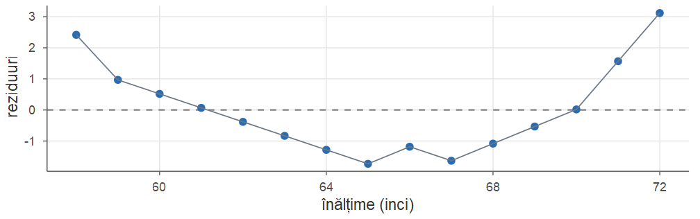
mw2 <- lm(weight ~ height + I(height^2), data = women)
round(summary(mw2)$coefficients, 5)
#> Estimate Std. Error t value Pr(>|t|)
#> (Intercept) 261.87818 25.19677 10.393 0
#> height -7.34832 0.77769 -9.449 0
#> I(height^2) 0.08306 0.00598 13.891 0
c(sigma_liniar = summary(mw)$sigma, sigma_patratic = summary(mw2)$sigma)
#> sigma_liniar sigma_patratic
#> 1.5250 0.3841Coeficientul termenului pătratic este puternic semnificativ (\(t=13.9\)), iar eroarea standard reziduală scade de la \(1.525\) la \(0.384\) livre: modelul pătratic descrie mult mai bine datele.
Pentru datele \(x=(0,1,2,3)\), \(y=(1,3,2,5)\):
scrieți matricea de design \(X\), calculați \(X^{\mathsf T} X\), \((X^{\mathsf T} X)^{-1}\), \(X^{\mathsf T}\mathbf y\) și \(\hat{\bbeta}\);
estimați matricea de covarianță \(\Var(\hat{\bbeta})\);
calculați ponderile de influență \(h_{ii}\) și verificați că suma lor este 2.
Valorile ajustate sunt \(1.1,\ 2.2,\ 3.3,\ 4.4\), reziduurile \(-0.1,\ 0.8,\ -1.3,\ 0.6\), \(SSE=0.01+0.64+1.69+0.36=2.7\), \(\hat\sigma^2=2.7/2=1.35\): \[ \hat\sigma^2(X^{\mathsf T} X)^{-1}=\frac{1.35}{20}\begin{pmatrix}14&-6\\-6&4\end{pmatrix}=\begin{pmatrix}0.945&-0.405\\-0.405&0.270\end{pmatrix}, \] deci \(\operatorname{se}(\hat\beta_0)=\sqrt{0.945}\approx0.972\) și \(\operatorname{se}(\hat\beta_1)=\sqrt{0.27}\approx0.520\).
\(\xbar=1.5\), \(S_{xx}=5\), \(h_{ii}=\frac14+\frac{(x_i-1.5)^2}{5}\): \(0.7,\ 0.3,\ 0.3,\ 0.7\), cu suma \(2\). Punctele extreme au pondere de influență mai mare.
Un experimentator poate alege \(n=2k\) valori \(x_1,\dots,x_n\) în intervalul \([-1,1]\) pentru a estima panta \(\beta_1\) a unei dependențe liniare. Ce alegere minimizează \(\Var(\hat\beta_1)\)? Comparați cu alegerea a \(n=10\) puncte echidistante în \([-1,1]\). Care este dezavantajul alegerii optime?
Cum \(\Var(\hat\beta_1)=\sigma^2/S_{xx}\), trebuie maximizat \(S_{xx}\). Pentru \(x_i\in[-1,1]\), \[ S_{xx}=\sum x_i^2-n\xbar^2\le\sum x_i^2\le n, \] cu egalitate \(\iff\) \(x_i\in\{-1,1\}\) pentru orice \(i\) și \(\xbar=0\): jumătate din puncte în \(-1\), jumătate în \(1\). Atunci \(S_{xx}=n\) și \(\Var(\hat\beta_1)=\sigma^2/n\).
Pentru \(n=10\) puncte echidistante, \(x_i=-1+2(i-1)/9\): \[ S_{xx}=\frac{n(n+1)}{3(n-1)}=\frac{110}{27}\approx4.074, \] deci varianța este \(\sigma^2/4.074\) — de \(10/4.074\approx2.45\) ori mai mare decât în cazul optim.
Dezavantajul: cu măsurători doar în două puncte nu putem verifica liniaritatea — orice curbă care trece prin cele două medii ar fi compatibilă cu datele. În practică se păstrează câteva puncte și în interiorul intervalului.
Sume: \(S_{xx}=\sum(x_i-\xbar)^2=\sum x_i^2-n\xbar^2\), \(S_{xy}=\sum x_iy_i-n\xbar\bar y_n\), \(S_{yy}=\sum(y_i-\bar y_n)^2\).
Corelația de selecție: \(r=\dfrac{S_{xy}}{\sqrt{S_{xx}S_{yy}}}\in[-1,1]\); \(|r|=1\) \(\iff\) puncte coliniare; măsoară doar asocierea liniară.
Modelul: \(Y_i=\beta_0+\beta_1x_i+\varepsilon_i\), \(\E[\varepsilon_i]=0\), \(\Var(\varepsilon_i)=\sigma^2\), necorelate (normale, pentru inferență).
EMCMP: \(\hat\beta_1=\dfrac{S_{xy}}{S_{xx}}=r\dfrac{s_y}{s_x}\), \(\hat\beta_0=\bar y_n-\hat\beta_1\xbar\); dreapta trece prin \((\xbar,\bar y_n)\); \(\sum e_i=\sum x_ie_i=0\).
Momente: \(\E[\hat\beta_j]=\beta_j\); \(\Var(\hat\beta_1)=\dfrac{\sigma^2}{S_{xx}}\); \(\Var(\hat\beta_0)=\sigma^2\Big(\dfrac1n+\dfrac{\xbar^2}{S_{xx}}\Big)\); \(\hat\sigma^2=\dfrac{SSE}{n-2}\) nedeplasat.
Descompunere: \(SST=SSR+SSE\), \(SSR=S_{xy}^2/S_{xx}\), \(SSE=S_{yy}(1-r^2)\), \(R^2=SSR/SST=r^2\).
Inferență (erori normale): \((\hat\beta_1-\beta_1)\big/(\hat\sigma/\sqrt{S_{xx}})\sim\Stud{n-2}\); IÎ: \(\hat\beta_1\pm t_{n-2;1-\alpha/2}\,\hat\sigma/\sqrt{S_{xx}}\); \(F=SSR/(SSE/(n-2))=T^2\sim\Fish{1}{n-2}\); test \(\rho=0\): \(T=r\sqrt{n-2}/\sqrt{1-r^2}\).
Predicție în \(x_0\): \(\hat y_0\pm t_{n-2;1-\alpha/2}\,\hat\sigma\sqrt{\dfrac1n+\dfrac{(x_0-\xbar)^2}{S_{xx}}}\) (răspuns mediu); cu \(1+\dots\) sub radical pentru o observație nouă.
Matriceal: \(\hat{\bbeta}=(X^{\mathsf T} X)^{-1}X^{\mathsf T}\mathbf Y\), \(\Var(\hat{\bbeta})=\sigma^2(X^{\mathsf T} X)^{-1}\), \(\hat\sigma^2=SSE/(n-p-1)\). Polinomial: coloanele \(1,x,\dots,x^d\); modelul se alege după eroarea pe date noi. Ridge: \(\hat{\bbeta}_\lambda=(X^{\mathsf T}X+\lambda I)^{-1}X^{\mathsf T}\mathbf Y\).
R: lm, summary, confint, anova, predict(..., interval = ...), rstandard, hatvalues, cor.test, poly.
cars: ajustați sqrt(dist) ~ speed, comparați graficele de diagnostic și construiți un interval de predicție de \(95\%\) pentru distanța la \(21\) mile/oră (ridicați la pătrat capetele). (R: \(\approx[33.5,\ 106.3]\) picioare.)women: cum se modifică \(\hat\beta_0\), \(\hat\beta_1\), \(r\), \(R^2\), \(\hat\sigma\) și \(t\) dacă trecem la cm (\(1\) inci \(=2.54\) cm) și kg (\(1\) livră \(=0.453592\) kg)? (R: \(\hat\beta_1\approx0.6161\), \(\hat\beta_0\approx-39.70\), \(\hat\sigma\approx0.692\); \(r\), \(R^2\), \(t\) nu se schimbă.)faithful: după o erupție de \(3\) minute, cât vom aștepta următoarea erupție? Estimare punctuală și interval de \(95\%\); de ce intervalul de predicție? (R: \(\hat y=33.474+10.730x\), \(\hat y_0=65.66\); IP \(\approx[54.0,\ 77.3]\), IÎ \(\approx[64.9,\ 66.4]\).)mtcars, mpg ~ disp: semnificația pantei, IÎ și interval de predicție la \(200\) inci cubi, graficul reziduurilor. (R: \(\hat y=29.600-0.0412x\), \(R^2\approx0.718\); IÎ \(\approx[20.1,\ 22.6]\), IP \(\approx[14.6,\ 28.1]\).)Probabilități și Statistică · Cursul 14 — Regresie liniară